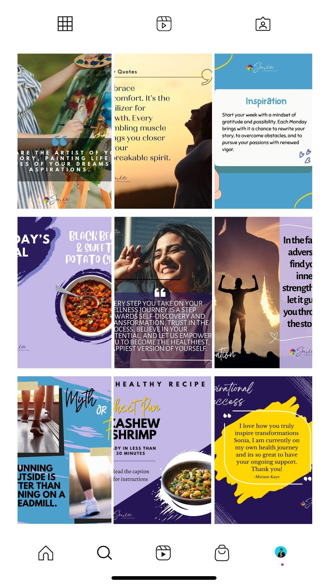
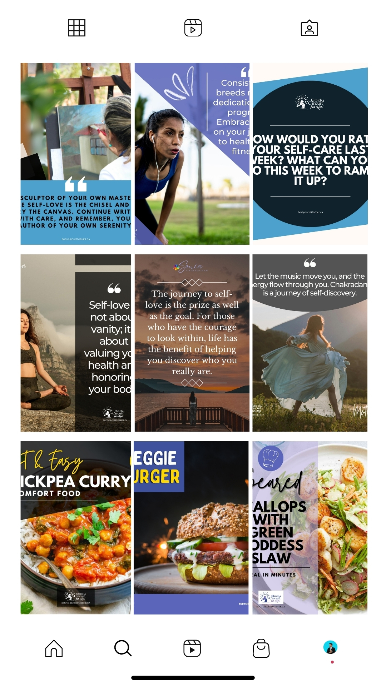
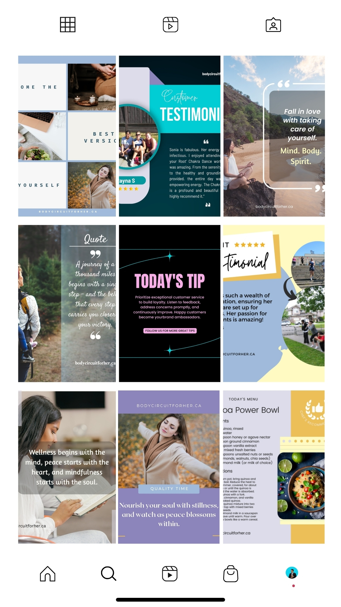

STARTER
$300 / month
A foundation for businesses that need consistent content.
- Content strategy board
- Up to 13 posts
- 1 platform
- Captions & calendar
- Scheduling
SOCIAL MEDIA MANAGEMENT • VIRTUAL ASSISTANCE
I create, organize, and manage social media content so you can spend more time running your business and less time worrying about what to post next.
A LITTLE ABOUT ME
I’m Jasper, a Social Media Manager and Virtual Assistant focused on helping businesses stay consistent, organized, and visible online.
WHO I CAN HELP
Small businesses, service-based businesses, coaches, consultants, personal brands, and health and wellness brands.
WHAT WORKING WITH ME LOOKS LIKE
From the first conversation to scheduled content, I keep the workflow organized and easy to follow.
We discuss your goals, audience, brand voice, platforms, content needs, and workflow.
Explore onboardingI turn your goals into content ideas, captions, visuals, reels, and a practical content calendar.
See my workflowContent is prepared, reviewed, scheduled, and supported with engagement and organization.
See how I keep things organizedWHAT I CAN DO FOR YOU
Choose the level of support that fits your needs. Packages can be customized.
STARTER
A foundation for businesses that need consistent content.
GROWTH
More content and platform support for growing businesses.
PREMIUM
Fuller support for brands that want consistency plus engagement.
Need something different? I can build a custom package around your platforms, content volume, and workflow.
SELECTED WORK
A look at the content and deliverables I can create and manage.

Content Creation

Content Creation

Campaign Content
Short-form Video
Short-form Video
Short-form Video
EXPERIENCE & APPROACH
I focus on clear communication, organized systems, and content that is ready to use.
Keeping feedback and next steps easy to follow.
Helping keep content, files, ideas, and schedules in order.
Turning plans into content your business can actually use.
LET'S TALK
Tell me about your business, platforms, and goals. We'll start by understanding the support you need and the best next step.